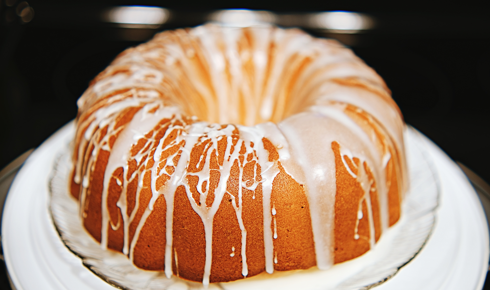

Lemon Drizzle cake

Paragraph about the cake...
Ingredients
Cake
- Self rasising flour 225g
- Caster sugar 225g
- Unsalted butter 225g
- Lemon zest 1 lemon
- Eggs 4 medium
Drizzle
- Lemon juice 3 lemons
- Caster sugar 170g
Method
- Pre-heat oven to 180C/160C fan
- Mix together the butter and caster sugar until creamy consistency is achieved. Add in the eggs one at a time and mix in slowly.
- Sift in the self-raising flour, then add lemon zest and mix thoroughly.
- Grease the muffin tray with a little butter, then spoon the mixture into each case until about 2/3 full.
- Bake for approximately 15 mins or until a skewer inserted comes out clean.
- Remove from oven and allow it to begin cooling.
- Whilst the cakes are cooling; Gently heat the sugar and lemon juice mixture over the hob until the sugar is completely dissolved.
- Whilst the cakes are still warm, cut off the central portion of each cupcake (like you would with a butterfly cake) and spoon 1.5 tsp of the syrup into each cupcake. Replace the top of the cake and drizzle the remaining syrup over all of the cupcakes.
- These cupcakes will keep for 3-4 days in an air tight container.